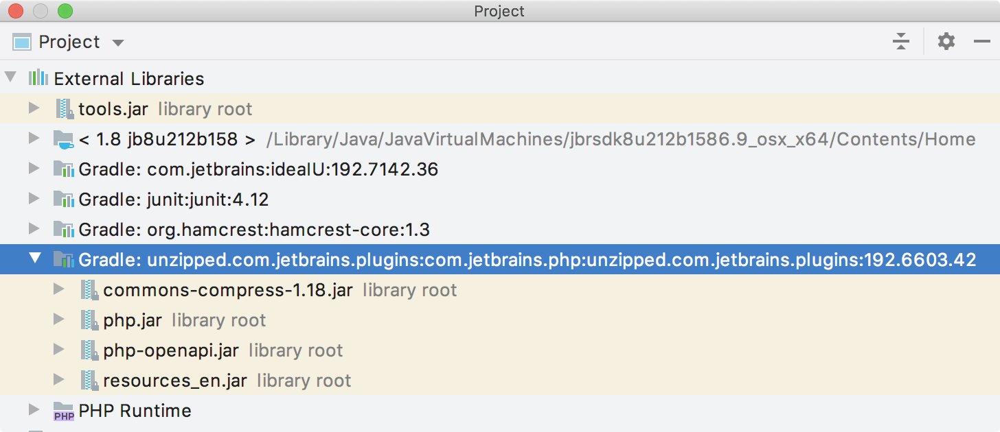

Plugin Compatibility with IntelliJ Platform Products
Introduction
All products based on the IntelliJ Platform are built on the same underlying API. Some of these products share features built on top of the platform, such as Java support in IntelliJ IDEA and Android Studio. Underlying those shared features are shared components. When authoring a plugin for the IntelliJ Platform, it is important to understand and declare dependencies on these components. Otherwise, it may not be possible to load or run the plugin in a product because the components on which it depends aren’t available.
- Introduction
- Declaring Plugin Dependencies
- Modules
- Exploring Module and Plugin APIs
- Verifying Dependency
- Platform API Version Compatibility
Declaring Plugin Dependencies
For the purposes of dependencies, a module can be thought of like a built-in plugin that ships as a non-removable part of a product. A working definition of a dependency is that a plugin project cannot be run without the module present in an IntelliJ Platform-based product. Declaring a dependency on a module also expresses a plugin’s compatibility with a product in that the IntelliJ Platform determines whether a product contains the correct modules to support a plugin before loading it.
Part I of this document describes the syntax for declaring plugin dependencies and optional plugin dependencies.
Part II of this document (below) describes the functionality of the IntelliJ Platform modules to aid in determining the dependencies of a plugin.
The way dependency declarations are handled by the Intellij Platform is determined by the contents of the plugin.xml file:
- If a plugin does not declare any dependencies in its
plugin.xmlfile, or if it declares dependencies only on other plugins but not modules, it’s assumed to be a legacy plugin and is loaded only in IntelliJ IDEA. This configuration of dependency declaration is deprecated; do not use it for new plugin projects. - If a plugin declares at least one module dependency in its
plugin.xmlfile, the plugin is loaded if an IntelliJ Platform-based product contains all the modules and plugins on which the plugin has declared a dependency.
Modules
A module represents a built-in plugin that is a non-removable part of a product. Some modules are available in all products, and some modules are available only in some, or even just one product. This section identifies and discusses modules of both types.
Modules Available in All Products
A core set of modules are available in all products based on the IntelliJ Platform. These modules provide a set of shared functionality. The following table lists modules that are currently available in all products.
Module for <depends> ElementDeclaration in plugin.xml File |
Functionality |
|---|---|
com.intellij.modules.platform |
Messaging, UI Themes, UI Components, Files, Documents, Actions, Components, Services, Extensions, Editors |
com.intellij.modules.lang |
File Type, Lexer, Parser, Highlighting, References, Code Completion, Find, Rename, Formatter, Code Navigation |
com.intellij.modules.xml |
XML, XML DOM, XSD/DTD, DOM Model |
com.intellij.modules.vcs |
VCS Revision Numbers, File Status, Change Lists, File History, Annotations |
com.intellij.modules.xdebugger |
Debug Session, Stack Frames, Break Points, Source Positions, Memory Views, Tracked Instances |
As of this writing, if a plugin: A) is dependent only on one or more of the modules in the table above, and B) declares those module dependencies in plugin.xml, then any product developed by JetBrains based on the IntelliJ Platform will load it.
Modules Specific to Functionality
More specialized functionality is also delivered via modules and plugins in IntelliJ Platform-based products.
For example, the com.intellij.modules.python module supports the Python language-specific functionality.
If a plugin uses functionality from this module, such as Python-specific inspections and refactoring, it must declare a dependency on this module.
Note that not all products define and declare modules. For example, PhpStorm does not have its own module, but the product itself depends on (and ships with) the PHP language plugin. A plugin project is compatible with PHP functionality if it declares a dependency on this PHP language plugin.
The following table lists(1) modules or built-in plugins that provide specific functionality, and the products that currently ship with them.
Module or Plugin for <depends> ElementDeclaration in plugin.xml File |
Functionality |
IntelliJ Platform-Based Product Compatibility |
|---|---|---|
com.intellij.modules.java See (2) below. com.intellij.java |
Java language PSI Model, Inspections, Intentions, Completion, Refactoring, Test Framework | IntelliJ IDEA, Android Studio |
com.intellij.modules.ultimate |
All functionality unique to IntelliJ IDEA Ultimate | IntelliJ IDEA Ultimate Edition |
com.intellij.modules.androidstudio |
Android SDK Platform, Build Tools, Platform Tools, SDK Tools | Android Studio |
com.intellij.modules.appcode |
CocoaPods, Core Data Objects, Device & Simulator Support | AppCode |
com.intellij.modules.cidr.lang |
C, C++, Objective-C/C++ language PSI Model, Swift/Objective-C Interaction, Inspections, Intentions, Completion, Refactoring, Test Framework | AppCode, CLion |
com.intellij.modules.cidr.debugger |
Debugger Watches, Evaluations, Breakpoints, Inline Debugging | AppCode, CLion, RubyMine |
com.intellij.modules.clion |
CMake, Profiler, Embedded Development, Remote Development, Remote Debug, Disassembly | CLion |
com.intellij.database |
Database Tools and SQL language PSI Model, Inspections, Completion, Refactoring, Queries | DataGrip, IntelliJ IDEA Ultimate, AppCode, PhpStorm, PyCharm Professional, RubyMine, CLion, GoLand, Rider, and WebStorm if the Database Tools and SQL plugin is installed. |
com.intellij.modules.go |
Go language PSI Model, Inspections, Intentions, Completion, Refactoring, Test Framework | GoLand |
com.intellij.modules.python |
Python language PSI Model, Inspections, Intentions, Completion, Refactoring, Test Framework | PyCharm, and other products if the Python plugin is installed. |
com.intellij.modules.rider |
Connection to ReSharper Process in Background | Rider |
com.intellij.modules.ruby |
Ruby language PSI Model, Inspections, Intentions, Completion, Refactoring, Test Framework | RubyMine, and IntelliJ IDEA Ultimate if the Ruby plugin is installed. |
com.jetbrains.php |
PHP language PSI Model, Inspections, Intentions, Completion, Refactoring, Test Framework | PhpStorm, and other products if the PHP plugin is installed. |
JavaScript |
JavaScript language PSI Model, Inspections, Intentions, Completion, Refactoring, Test Framework | WebStorm, and other products if the JavaScript plugin is installed |
Notes about Module and Plugin Dependency:
(1) This table is not exhaustive, there are other modules currently available in JetBrains’ IntelliJ Platform-based IDEs.
To see a list of modules, invoke the code completion feature for the <depends> element contents while editing the plugin.xml file.
(2) The Java language functionality was extracted as a plugin in version 2019.2 of the IntelliJ Platform.
This refactoring separated the Java implementation from the other, non-language portions of the platform.
Consequently, Java dependencies are expressed differently in plugin.xml depending on the version of the IntelliJ Platform being targeted:
- Syntax required for releases prior to 2019.2, allowable in all releases:
plugin.xmlinclude<depends>com.intellij.modules.java</depends>
- Syntax for 2019.2 and later releases:
plugin.xmlallowable alternative include<depends>com.intellij.java</depends>build.gradlerequired to includeintellij.plugins 'java'
Exploring Module and Plugin APIs
Once the dependency on a module or plugin is declared in plugin.xml, it’s useful to explore the packages and classes available in that dependency.
The section below gives some recommended procedures for discovering what’s available in a module or plugin on which a project depends.
These procedures assume a project has the build.gradle and plugin.xml dependencies configured correctly.
Exploring APIs as a Consumer
Exploring the available packages and classes in a plugin or module utilizes features in the IntelliJ IDEA IDE.
If the project is not up to date, Reimport the Gradle project as a first step. Reimporting the project will automatically update the dependencies.
In the Project Window, select Project View and scroll to the bottom to see External Libraries.
Look for the library Gradle:unzipped.com.jetbrains.plugins:foo:, where “foo” matches, or is similar to, the contents of the <depends> tags in plugin.xml or the intellij.plugins declaration in build.gradle.
The image below shows the External Libraries for the example plugin project configuration explained in Configuring build.gradle and Configuring plugin.xml.

Expand the External Library (as shown) to reveal the JAR files contained in the library. Drill down into the JAR files to expose the packages and (decompiled) classes.
Exploring APIs as an Extender
If a project is dependent on a plugin or module, in some cases the project can also extend the functionality available from the plugin or module.
To browse the opportunities for extension, start by placing the cursor on the contents of the <depends> elements in the project’s plugin.xml file.
Use the Go to Declaration IDE feature to navigate to the plugin.xml file for the plugin on which the project depends.
For example, performing this procedure on the <depends>com.jetbrains.php</depends> declaration in a project’s plugin.xml file will navigate to the plugin.xml file for the com.jetbrains.php (PHP) project.
A common, but not universal, pattern in the IntelliJ platform is for a plugin (like PHP) to declare <extensionPoints> and then implement each one as <extensions>.
Continuing the example, search the PHP plugin’s plugin.xml file for:
<extensionPoints>to find the opportunities for extending the PHP plugin’s functionality.<extensions defaultExtensionNs="com.jetbrains.php">to find where the PHP plugin extends functionality. The extension namespace (in this examplecom.jetbrains.php) will match the<id>defined in theplugin.xmlfile.
Verifying Dependency
Before marking a plugin project as dependent only on modules in a target product in addition to com.intellij.modules.platform, verify the plugin isn’t implicitly dependent on any APIs that are specific to IntelliJ IDEA.
To verify a plugin project’s independence, create an SDK pointing to an installation of the intended target IntelliJ Platform-based product, e.g., PhpStorm, rather than IntelliJ IDEA.
Use the same development version of the IntelliJ platform as the targeted product.
Additional product-specific information about developing for the IntelliJ Platform is documented in Part VIII.
Based on the tables above, the JetBrains plugin repository automatically detects the JetBrains products with which a plugin is compatible, and makes the compatibility information available to plugin authors. The compatibility information determines if plugins are available at the plugin repository to users of a particular JetBrains product.
Platform API Version Compatibility
The API of IntelliJ Platform and bundled plugins may change between releases. The significant changes that may break plugins are listed on Incompatible Changes in IntelliJ Platform and Plugins API page.